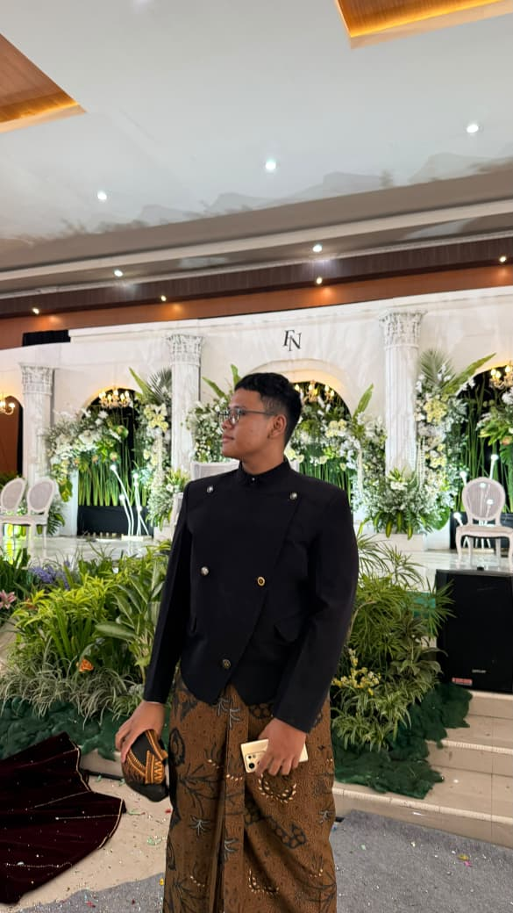
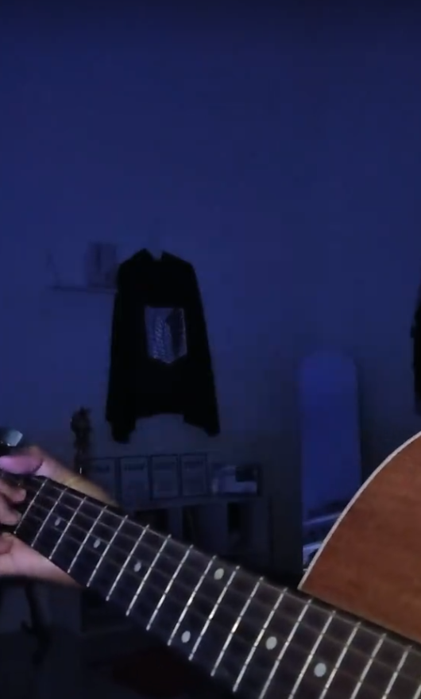
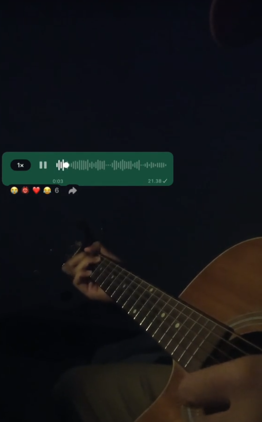
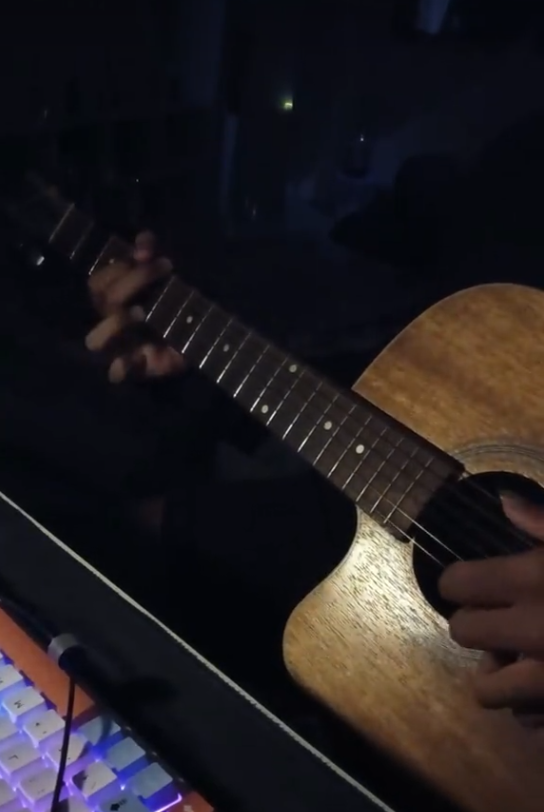
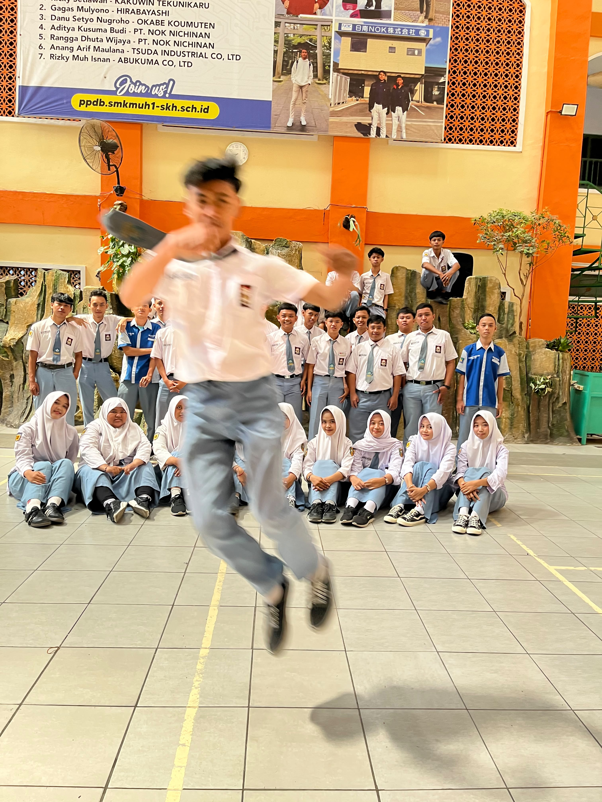
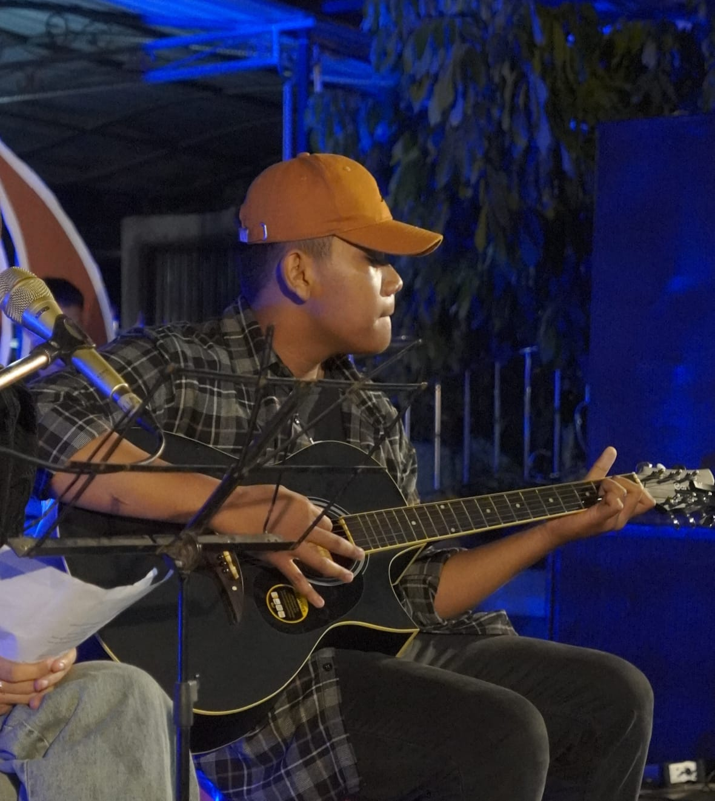
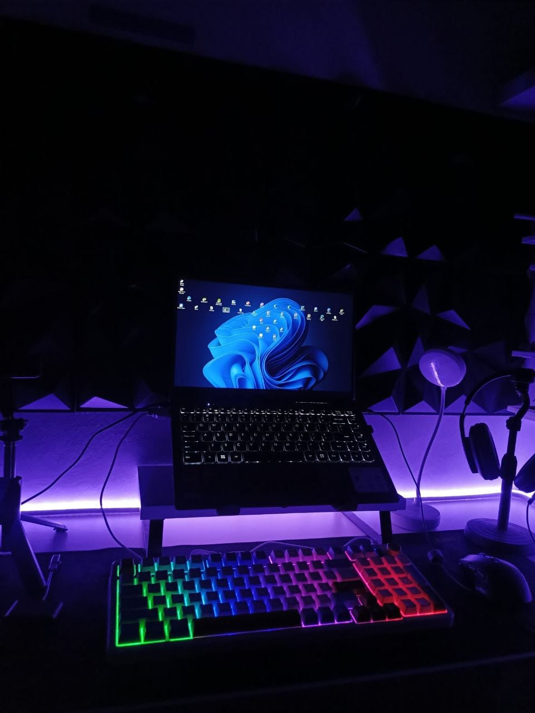
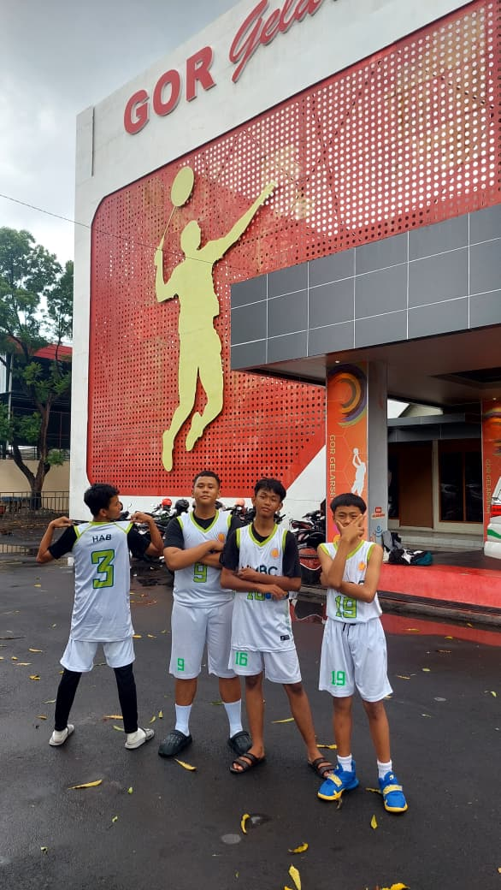
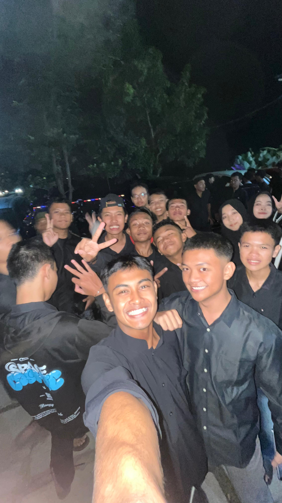
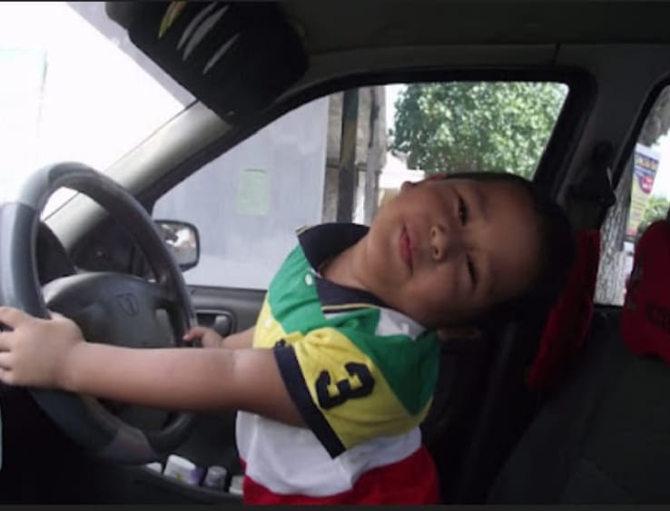

HELLO, I'M FAREL.
Turning ideas into visuals, websites, and cover songs with creative contents.
Based in Indonesia
I'm Farel, a creative student exploring the intersection of design, web, and music. I enjoy turning ideas into visual experiences, building interfaces for the web, and creating cover song and guitar content.
For me, creativity isn't limited to one medium. Sometimes it becomes a visual, sometimes a website, and sometimes a song cover.

Three things I enjoy creating.
Creating visual identities, digital graphics, promotional materials, and creative visual content.
Building responsive websites with a strong focus on visual design, interaction, and user experience.
Creating short-form cover song and guitar content, mainly for TikTok.
A selection of things I've created.
From idea to final result.
Understanding the idea, purpose, and audience.
Finding references, concepts, visual direction, and possibilities.
Creating the design, website, or content.
Improving details, consistency, usability, and presentation.
A different side of my creativity.
Outside of design and web, I also create short-form cover song and guitar content on TikTok.



See my cover song and guitar content on TikTok.
Visit My TikTok →Cover Song · Guitar · Short-form Content
A glimpse into the things I enjoy.






Started exploring digital design and creative tools in My Middle School.
Started experimenting with websites, UI, and front-end development in High School.
Created school projects and explored different creative directions in My High School.
Developing skills across graphic design, front-end web development, and cover song content when I was on job training.
Have a project, collaboration, or just want to say hello?